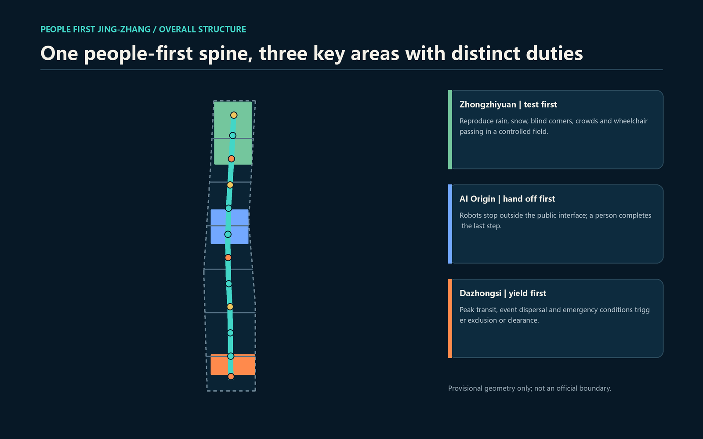
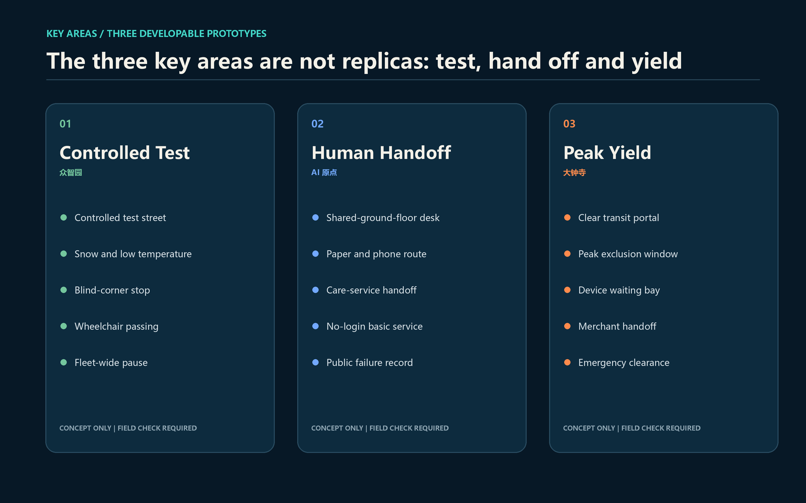
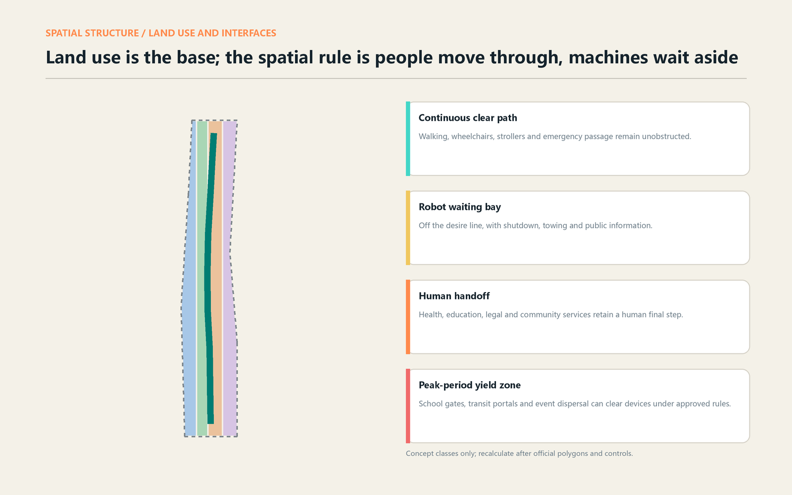
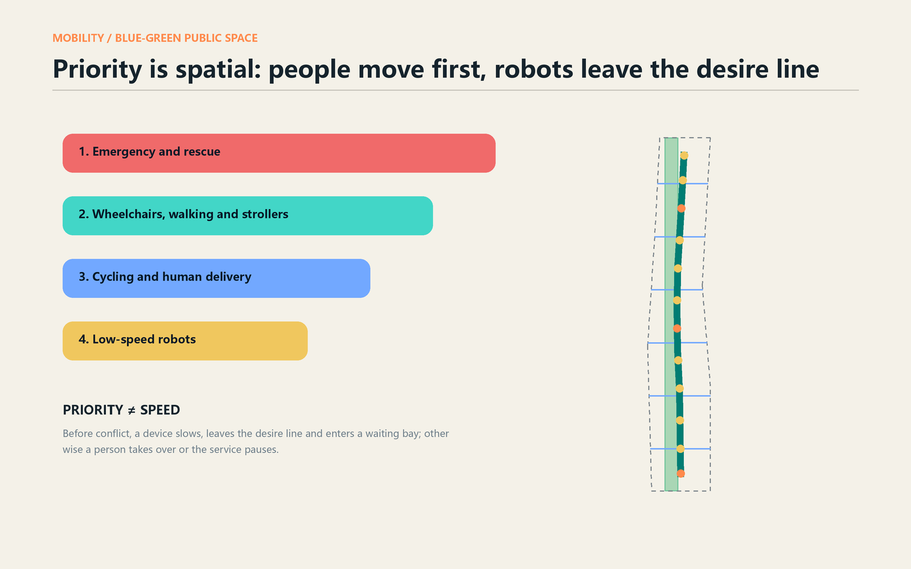
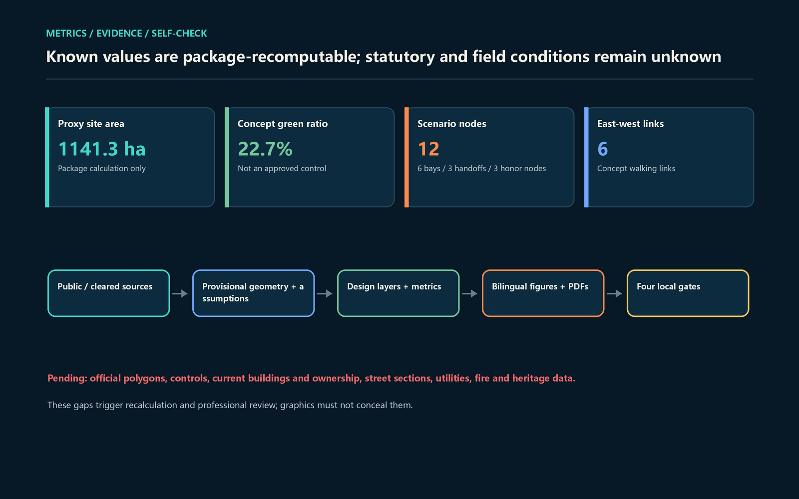

People move through the middle; machines wait aside. If a machine cannot yield, a person takes over or the service pauses.

43.6 km²
Coordinated research: responsibility and ecosystem loop
≈11.4 km²
Overall design: people-first spine and public interfaces
≈368.4 ha
Key areas: test, hand off and yield
Geometry role: provisional_constraint. Official boundary: false.

Snow, blind corners, crowding and wheelchair passing.
Machines stop outside; people complete the last step.
Clear devices at peaks, dispersal and emergencies.

Research/testing, park green space, handoff/commercial service and community basic service cover the proxy boundary. Six concept footprints test workflow capacity only.
Survey and ownership → value/structure/carbon → public and owner input → retain first → lawful decision.

Concept order: emergency and rescue; wheelchairs, walking and strollers; cycling and human delivery; low-speed robots. This is a design principle, not substituted law or approval.
| ID | Scenario | Common baseline |
|---|---|---|
| TVS-01 | Snow and low-temperature delivery | Human review, no persistent tracking, pausable, manual route retained |
| TVS-02 | Wheelchair passing and blind corners | Human review, no persistent tracking, pausable, manual route retained |
| TVS-03 | Fleet queue and emergency clearance | Human review, no persistent tracking, pausable, manual route retained |
| S-04—S-12 | Human handoff, accessible guidance, public services, maintenance and culture | Human review, no persistent tracking, pausable, manual route retained |

Name and identity, Three Zones and Two Wings, six cases, seven personas, twelve scenarios and three industry tests.
Twelve public nodes, three pilgrimage landmarks, a yielding heritage narrative, People First Week and a long-term public ledger.
The page shows the target state; self_check_submission.py is authoritative.
Official polygons, controls, buildings and ownership, street sections, flows, utilities, fire and heritage evidence remain pending. Bays, exclusion windows and handoffs are not issued permits.
Full provenance, allowed uses and limitations: sources.json. Complete assumptions: assumptions.json.